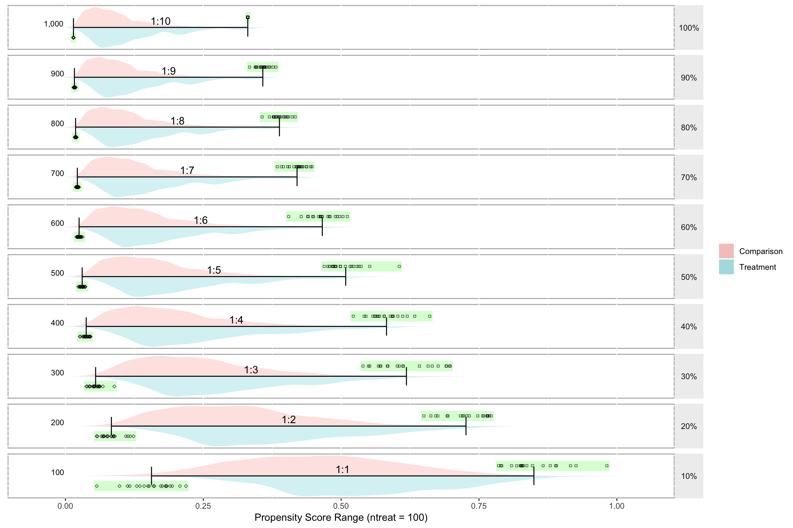
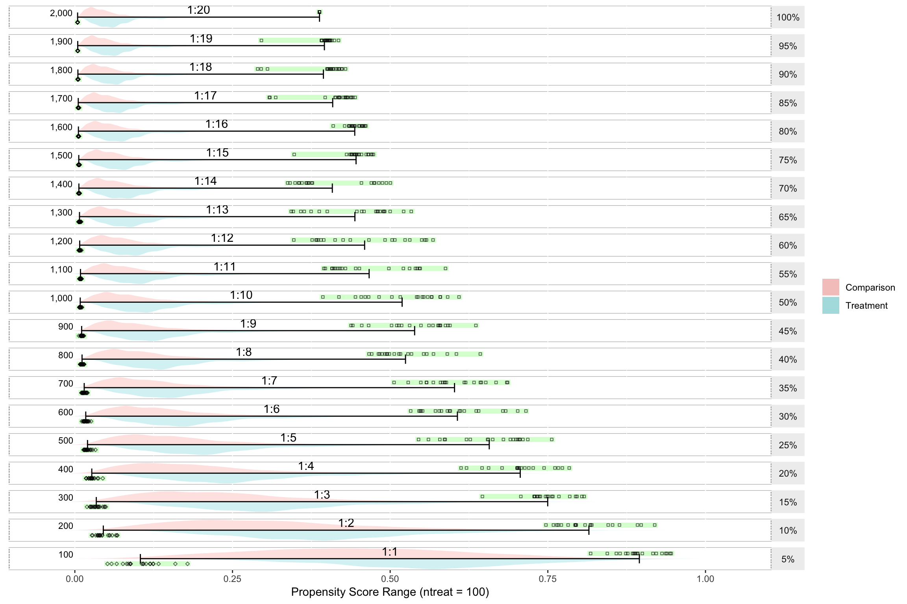
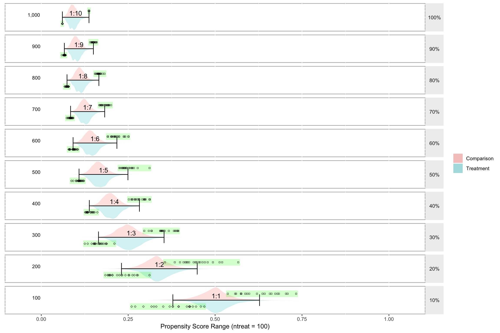
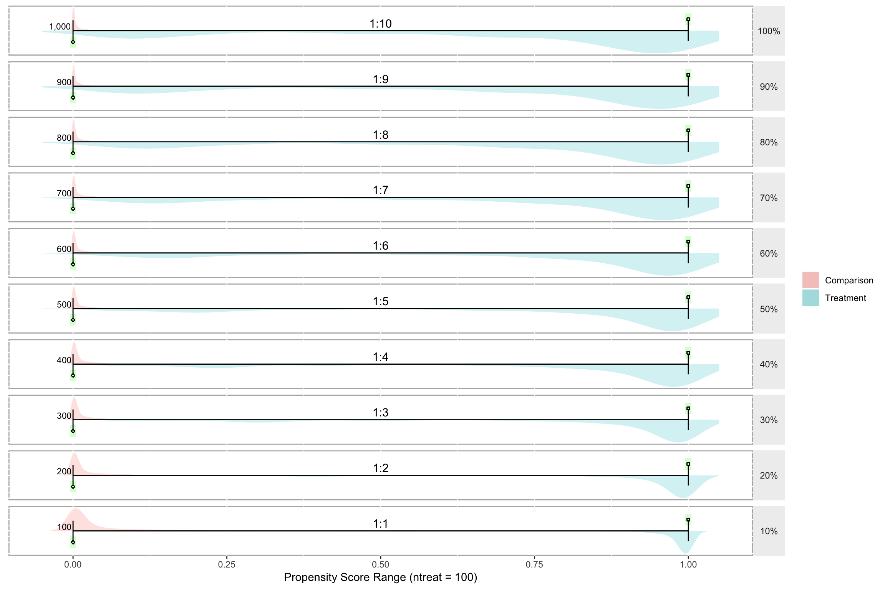
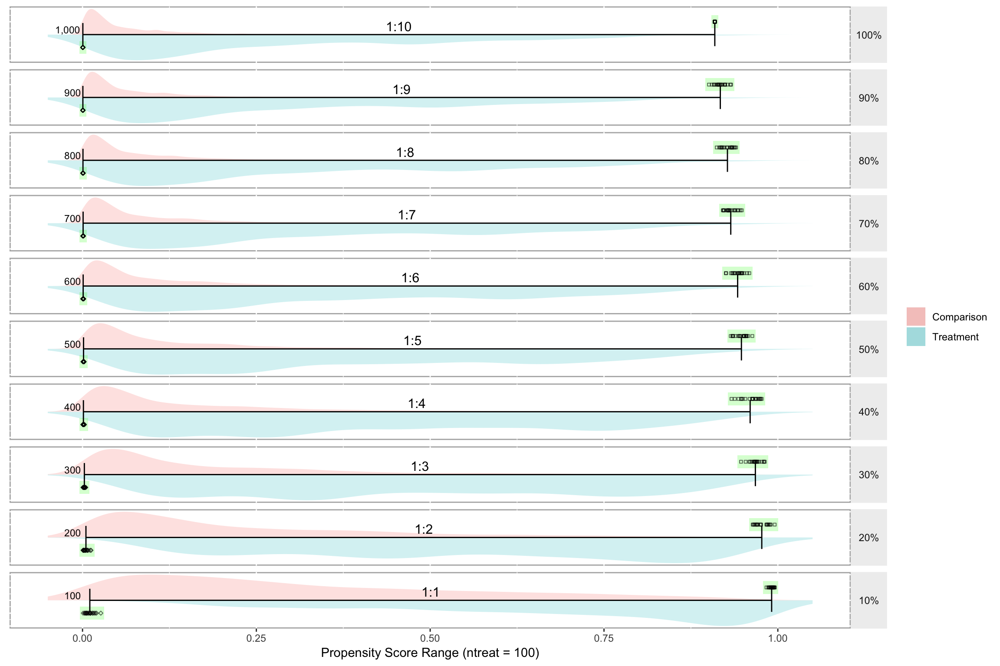

B Propensity Score Ranges
This function will create a data frame with three variables (a, b, c) for two groups.
library(multilevelPSA)
getSimulatedData <- function(nvars = 3, ntreat = 100, treat.mean = 0.6, treat.sd = 0.5,
ncontrol = 1000, control.mean = 0.4, control.sd = 0.5) {
if (length(treat.mean) == 1) {
treat.mean = rep(treat.mean, nvars)
}
if (length(treat.sd) == 1) {
treat.sd = rep(treat.sd, nvars)
}
if (length(control.mean) == 1) {
control.mean = rep(control.mean, nvars)
}
if (length(control.sd) == 1) {
control.sd = rep(control.sd, nvars)
}
df <- c(rep(0, ncontrol), rep(1, ntreat))
for (i in 1:nvars) {
df <- cbind(df, c(rnorm(ncontrol, mean = control.mean[1], sd = control.sd[1]),
rnorm(ntreat, mean = treat.mean[1], sd = treat.sd[1])))
}
df <- as.data.frame(df)
names(df) <- c("treat", letters[1:nvars])
return(df)
}1:10 (100 treatments, 1000 control units)
test.df1 <- getSimulatedData(ntreat = 100, ncontrol = 1000)
psranges1 <- psrange(test.df1, test.df1$treat, treat ~ ., samples = seq(100,
1000, by = 100), nboot = 20)
plot(psranges1)
summary(psranges1)## p ntreat ncontrol ratio min.mean min.sd min.median
## 1 10 100 100 1 0.15607122 0.0397388795 0.16058282
## 21 20 100 200 2 0.08333485 0.0193815860 0.07989006
## 41 30 100 300 3 0.05473508 0.0113995963 0.05285193
## 61 40 100 400 4 0.03765264 0.0057528081 0.03807210
## 81 50 100 500 5 0.03037681 0.0035860547 0.03110543
## 101 60 100 600 6 0.02477044 0.0030294298 0.02485441
## 121 70 100 700 7 0.02157335 0.0015089751 0.02112071
## 141 80 100 800 8 0.01844567 0.0009961631 0.01828649
## 161 90 100 900 9 0.01629556 0.0010700622 0.01611003
## 181 100 100 1000 10 0.01453930 0.0000000000 0.01453930
## min.se min.min min.max max.mean max.sd max.median
## 1 0.0088858836 0.05686622 0.21857512 0.8495815 0.05080280 0.8297464
## 21 0.0043338544 0.05673333 0.12346914 0.7264830 0.03990986 0.7301801
## 41 0.0025490272 0.03786787 0.08859258 0.6184533 0.05415051 0.6088459
## 61 0.0012863670 0.02592885 0.04563137 0.5823261 0.03302572 0.5780575
## 81 0.0008018662 0.02340058 0.03598691 0.5083236 0.03227982 0.4986569
## 101 0.0006774011 0.01992831 0.03106816 0.4658278 0.02654592 0.4635782
## 121 0.0003374171 0.01885545 0.02473837 0.4200557 0.01697799 0.4224061
## 141 0.0002227488 0.01696225 0.02022493 0.3881060 0.01442410 0.3866870
## 161 0.0002392732 0.01474694 0.01852492 0.3579822 0.01157948 0.3592441
## 181 0.0000000000 0.01453930 0.01453930 0.3306953 0.00000000 0.3306953
## max.se max.min max.max
## 1 0.011359852 0.7856924 0.9820647
## 21 0.008924117 0.6500461 0.7722604
## 41 0.012108422 0.5396722 0.6978683
## 61 0.007384776 0.5220826 0.6608008
## 81 0.007217986 0.4693094 0.6054163
## 101 0.005935848 0.4048935 0.5112540
## 121 0.003796394 0.3840361 0.4470703
## 141 0.003225326 0.3567112 0.4166013
## 161 0.002589251 0.3339493 0.3817098
## 181 0.000000000 0.3306953 0.33069531:20 (100 treatments, 2000 control units)
test.df2 <- getSimulatedData(ncontrol = 2000)
psranges2 <- psrange(test.df2, test.df2$treat, treat ~ ., samples = seq(100,
2000, by = 100), nboot = 20)
plot(psranges2)
summary(psranges2)## p ntreat ncontrol ratio min.mean min.sd min.median
## 1 5 100 100 1 0.103905726 0.0320556096 0.107142689
## 21 10 100 200 2 0.045125876 0.0125382053 0.040303937
## 41 15 100 300 3 0.034023946 0.0084957779 0.033066893
## 61 20 100 400 4 0.026860409 0.0066813357 0.026095421
## 81 25 100 500 5 0.020098057 0.0050673591 0.018844209
## 101 30 100 600 6 0.017303447 0.0036902192 0.016874042
## 121 35 100 700 7 0.014850775 0.0029970995 0.014724521
## 141 40 100 800 8 0.011410420 0.0021469387 0.011602856
## 161 45 100 900 9 0.010778674 0.0019240575 0.010209809
## 181 50 100 1000 10 0.008542355 0.0012600263 0.008460578
## 201 55 100 1100 11 0.008948169 0.0011741946 0.009028753
## 221 60 100 1200 12 0.007678468 0.0011308141 0.007440696
## 241 65 100 1300 13 0.007376001 0.0012135331 0.007069843
## 261 70 100 1400 14 0.006403304 0.0007698200 0.006248771
## 281 75 100 1500 15 0.006221750 0.0007498069 0.006060769
## 301 80 100 1600 16 0.005658868 0.0005181636 0.005488641
## 321 85 100 1700 17 0.005413312 0.0005867353 0.005226072
## 341 90 100 1800 18 0.004848690 0.0003431279 0.004809666
## 361 95 100 1900 19 0.004577525 0.0001190219 0.004593598
## 381 100 100 2000 20 0.004375447 0.0000000000 0.004375447
## min.se min.min min.max max.mean max.sd max.median
## 1 7.167852e-03 0.051733996 0.178661707 0.8951243 3.478463e-02 0.8907102
## 21 2.803628e-03 0.027059959 0.067355664 0.8151360 4.919688e-02 0.8020895
## 41 1.899714e-03 0.019288682 0.049139969 0.7498046 3.752869e-02 0.7476146
## 61 1.493992e-03 0.017716227 0.044316797 0.7062473 4.725246e-02 0.7041710
## 81 1.133096e-03 0.013626997 0.032692468 0.6571050 5.990009e-02 0.6711006
## 101 8.251581e-04 0.011040057 0.025770446 0.6066183 5.451294e-02 0.5947387
## 121 6.701718e-04 0.010300981 0.020151699 0.6020598 5.116134e-02 0.5879645
## 141 4.800701e-04 0.008269876 0.014782980 0.5243244 4.815199e-02 0.5101789
## 161 4.302323e-04 0.006437306 0.014494152 0.5387761 5.655747e-02 0.5551983
## 181 2.817505e-04 0.007002938 0.011406644 0.5189611 6.217013e-02 0.5430891
## 201 2.625579e-04 0.006892403 0.010947912 0.4666514 6.413993e-02 0.4372149
## 221 2.528577e-04 0.006019265 0.010610583 0.4594839 7.352566e-02 0.4515450
## 241 2.713542e-04 0.005574252 0.009946307 0.4440750 6.180433e-02 0.4679452
## 261 1.721370e-04 0.005383043 0.007842719 0.4082777 6.136882e-02 0.3730742
## 281 1.676619e-04 0.005379226 0.007813695 0.4459146 2.636240e-02 0.4467309
## 301 1.158649e-04 0.005038693 0.006718842 0.4438479 1.264566e-02 0.4425390
## 321 1.311980e-04 0.004800651 0.006998850 0.4088718 4.321938e-02 0.4230782
## 341 7.672573e-05 0.004405349 0.005980909 0.3941516 4.277788e-02 0.4069567
## 361 2.661411e-05 0.004344971 0.004747006 0.3956948 2.444378e-02 0.4000337
## 381 0.000000e+00 0.004375447 0.004375447 0.3879546 1.000000e-15 0.3879546
## max.se max.min max.max
## 1 0.007778081 0.8178474 0.9455989
## 21 0.011000757 0.7470076 0.9194607
## 41 0.008391669 0.6462721 0.8075923
## 61 0.010565971 0.6124022 0.7838985
## 81 0.013394067 0.5450304 0.7562037
## 101 0.012189464 0.5325345 0.7153037
## 121 0.011440024 0.5061709 0.6861969
## 141 0.010767112 0.4664472 0.6429069
## 161 0.012646634 0.4380242 0.6359416
## 181 0.013901663 0.3933144 0.6091368
## 201 0.014342124 0.3948888 0.5877631
## 221 0.016440838 0.3471948 0.5679551
## 241 0.013819868 0.3431424 0.5334311
## 261 0.013722486 0.3374251 0.5003817
## 281 0.005894812 0.3478395 0.4734096
## 301 0.002827655 0.4097057 0.4613861
## 321 0.009664146 0.3083789 0.4444204
## 341 0.009565424 0.2898762 0.4292217
## 361 0.005465795 0.2958516 0.4181276
## 381 0.000000000 0.3879546 0.3879546100 treatments, 1000 control units, equal means and standard deviations
test.df3 <- getSimulatedData(ncontrol = 1000, treat.mean = 0.5, control.mean = 0.5)
psranges3 <- psrange(test.df3, test.df3$treat, treat ~ ., samples = seq(100,
1000, by = 100), nboot = 20)
plot(psranges3)
summary(psranges3)## p ntreat ncontrol ratio min.mean min.sd min.median
## 1 10 100 100 1 0.37856124 0.062570369 0.38668917
## 21 20 100 200 2 0.23077488 0.035680170 0.22742177
## 41 30 100 300 3 0.16465951 0.020164413 0.16509354
## 61 40 100 400 4 0.13823882 0.009759935 0.13421685
## 81 50 100 500 5 0.10864651 0.009213722 0.10929073
## 101 60 100 600 6 0.09154158 0.007949813 0.09284312
## 121 70 100 700 7 0.08432091 0.004808652 0.08480916
## 141 80 100 800 8 0.07410177 0.003284654 0.07337204
## 161 90 100 900 9 0.06640652 0.002323468 0.06669179
## 181 100 100 1000 10 0.06074496 0.000000000 0.06074496
## min.se min.min min.max max.mean max.sd max.median
## 1 0.0139911598 0.25991916 0.46897513 0.6278589 0.057904214 0.6284763
## 21 0.0079783285 0.18438195 0.31135111 0.4485870 0.049873337 0.4453040
## 41 0.0045088998 0.12532383 0.21044030 0.3532457 0.029085840 0.3483755
## 61 0.0021823879 0.12649290 0.16120741 0.2823354 0.017448137 0.2812174
## 81 0.0020602509 0.08674195 0.12257616 0.2493659 0.020231935 0.2449267
## 101 0.0017776321 0.07884013 0.10530340 0.2175840 0.018089099 0.2123910
## 121 0.0010752472 0.07337723 0.09189387 0.1824542 0.010232130 0.1827490
## 141 0.0007344709 0.06736893 0.07891444 0.1657798 0.006436274 0.1645657
## 161 0.0005195433 0.05946719 0.07004452 0.1499796 0.004882924 0.1499828
## 181 0.0000000000 0.06074496 0.06074496 0.1372959 0.000000000 0.1372959
## max.se max.min max.max
## 1 0.012947776 0.5366369 0.7331236
## 21 0.011152017 0.3558560 0.5666023
## 41 0.006503792 0.2963018 0.3940516
## 61 0.003901522 0.2518835 0.3124219
## 81 0.004523998 0.2247264 0.3114824
## 101 0.004044846 0.1910216 0.2510128
## 121 0.002287974 0.1675003 0.2009194
## 141 0.001439195 0.1544713 0.1821468
## 161 0.001091855 0.1403697 0.1593696
## 181 0.000000000 0.1372959 0.1372959100 treatments, 1000 control units, very little overlap
test.df4 <- getSimulatedData(ncontrol = 1000, treat.mean = 0.25, treat.sd = 0.3,
control.mean = 0.75, control.sd = 0.3)
psranges4 <- psrange(test.df4, test.df4$treat, treat ~ ., samples = seq(100,
1000, by = 100), nboot = 20)
plot(psranges4)
summary(psranges4)## p ntreat ncontrol ratio min.mean min.sd min.median
## 1 10 100 100 1 1.680737e-05 2.143585e-05 5.855399e-06
## 21 20 100 200 2 3.577326e-06 5.292484e-06 9.104895e-07
## 41 30 100 300 3 2.644752e-06 4.098021e-06 1.341479e-06
## 61 40 100 400 4 1.846465e-06 1.387914e-06 1.254334e-06
## 81 50 100 500 5 1.240739e-06 1.744646e-06 7.529383e-07
## 101 60 100 600 6 8.224934e-07 5.510826e-07 7.753760e-07
## 121 70 100 700 7 7.381685e-07 2.907928e-07 7.255144e-07
## 141 80 100 800 8 6.653302e-07 1.868277e-07 7.013327e-07
## 161 90 100 900 9 5.648245e-07 1.675210e-07 5.537482e-07
## 181 100 100 1000 10 4.946927e-07 0.000000e+00 4.946927e-07
## min.se min.min min.max max.mean max.sd
## 1 4.793202e-06 3.238000e-12 8.498606e-05 0.9999834 1.892844e-05
## 21 1.183435e-06 7.483608e-08 1.826946e-05 0.9999611 6.293154e-05
## 41 9.163453e-07 8.496377e-08 1.875137e-05 0.9999285 7.081525e-05
## 61 3.103469e-07 5.167579e-07 5.246257e-06 0.9998835 8.973239e-05
## 81 3.901147e-07 1.363531e-07 7.710479e-06 0.9999016 8.133311e-05
## 101 1.232258e-07 1.658405e-07 2.710200e-06 0.9998672 6.880183e-05
## 121 6.502324e-08 2.623251e-07 1.206922e-06 0.9998190 6.145607e-05
## 141 4.177595e-08 2.944837e-07 9.645725e-07 0.9997837 5.158494e-05
## 161 3.745883e-08 2.928769e-07 1.002138e-06 0.9997703 5.635962e-05
## 181 0.000000e+00 4.946927e-07 4.946927e-07 0.9997408 0.000000e+00
## max.median max.se max.min max.max
## 1 0.9999891 4.232528e-06 0.9999426 1.0000000
## 21 0.9999893 1.407192e-05 0.9997798 0.9999987
## 41 0.9999583 1.583477e-05 0.9997394 0.9999958
## 61 0.9999148 2.006477e-05 0.9996972 0.9999742
## 81 0.9999137 1.818664e-05 0.9996900 0.9999786
## 101 0.9998865 1.538456e-05 0.9996680 0.9999559
## 121 0.9998115 1.374199e-05 0.9997215 0.9999230
## 141 0.9997739 1.153474e-05 0.9997011 0.9998901
## 161 0.9997641 1.260239e-05 0.9996974 0.9998626
## 181 0.9997408 0.000000e+00 0.9997408 0.9997408100 treat, 1000 control, 10 covariates
test.df5 <- getSimulatedData(nvars = 10, ntreat = 100, ncontrol = 1000)
psranges5 <- psrange(test.df5, test.df5$treat, treat ~ ., samples = seq(100,
1000, by = 100), nboot = 20)
plot(psranges5)
summary(psranges5)## p ntreat ncontrol ratio min.mean min.sd min.median
## 1 10 100 100 1 0.0104884856 6.498074e-03 0.0098358844
## 21 20 100 200 2 0.0049186831 3.328767e-03 0.0041011637
## 41 30 100 300 3 0.0026374317 1.052734e-03 0.0028785494
## 61 40 100 400 4 0.0012844050 6.137909e-04 0.0011461637
## 81 50 100 500 5 0.0014632821 4.623715e-04 0.0013831576
## 101 60 100 600 6 0.0009285948 3.794626e-04 0.0008515216
## 121 70 100 700 7 0.0008486325 2.752827e-04 0.0008668092
## 141 80 100 800 8 0.0006482525 2.056092e-04 0.0005958190
## 161 90 100 900 9 0.0005108171 7.469578e-05 0.0005210990
## 181 100 100 1000 10 0.0004837078 0.000000e+00 0.0004837078
## min.se min.min min.max max.mean max.sd
## 1 1.453013e-03 0.0009771476 0.0263330509 0.9911056 3.215265e-03
## 21 7.443349e-04 0.0006605101 0.0122476785 0.9769135 9.676413e-03
## 41 2.353985e-04 0.0005998227 0.0046293629 0.9676937 8.606312e-03
## 61 1.372478e-04 0.0005957022 0.0028792261 0.9601771 1.307702e-02
## 81 1.033894e-04 0.0006240486 0.0023289731 0.9476177 8.635115e-03
## 101 8.485042e-05 0.0003882062 0.0017774698 0.9422121 9.014796e-03
## 121 6.155508e-05 0.0003522386 0.0014522111 0.9323131 8.291693e-03
## 141 4.597561e-05 0.0003615482 0.0011200497 0.9275224 8.438924e-03
## 161 1.670248e-05 0.0003861774 0.0006429456 0.9172677 8.460324e-03
## 181 0.000000e+00 0.0004837078 0.0004837078 0.9093487 1.000000e-15
## max.median max.se max.min max.max
## 1 0.9917753 0.0007189551 0.9836504 0.9954776
## 21 0.9752686 0.0021637117 0.9638761 0.9954879
## 41 0.9677400 0.0019244300 0.9470855 0.9812785
## 61 0.9635344 0.0029241096 0.9333551 0.9768242
## 81 0.9508925 0.0019308704 0.9322614 0.9633041
## 101 0.9434032 0.0020157697 0.9252255 0.9589773
## 121 0.9299196 0.0018540790 0.9209121 0.9481534
## 141 0.9290814 0.0018870008 0.9121234 0.9398998
## 161 0.9163185 0.0018917860 0.9009513 0.9327219
## 181 0.9093487 0.0000000000 0.9093487 0.9093487